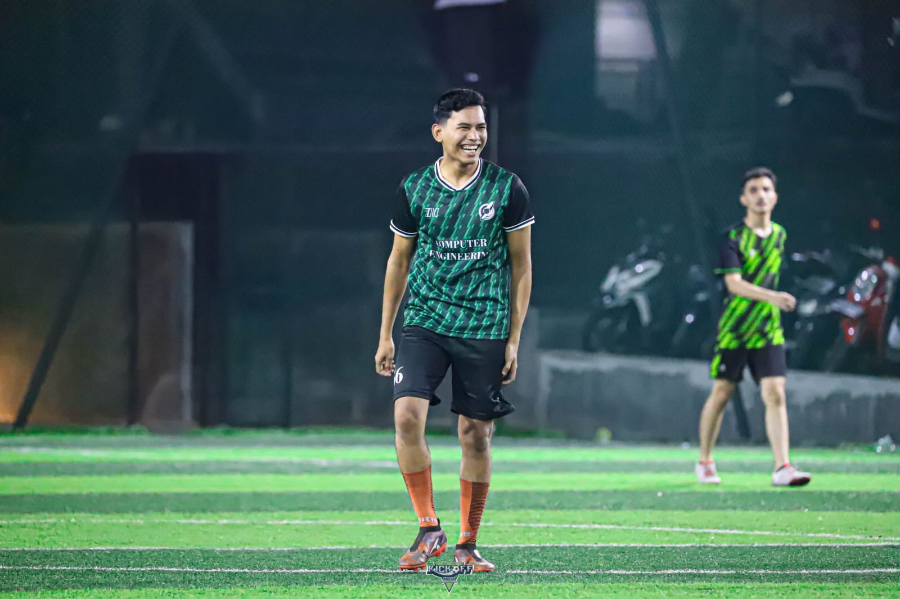
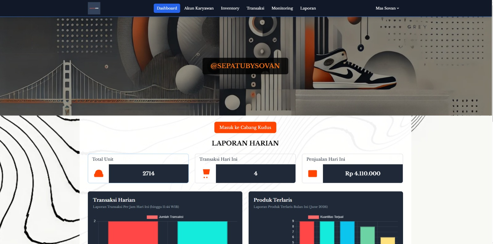
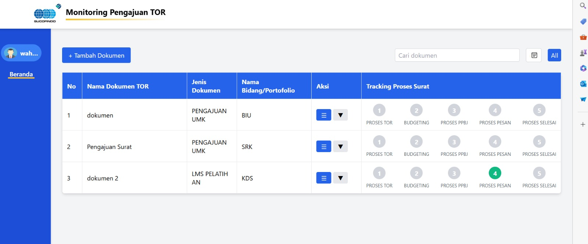
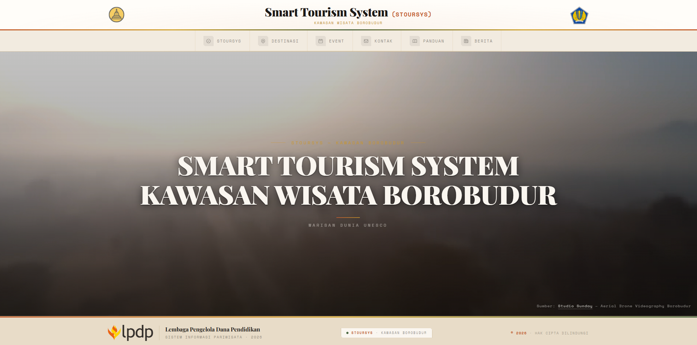

About Me
Fullstack Developer
Fullstack Developer specializing in modern web application development across both frontend and backend technologies. Experienced in building secure, high-performance, and scalable systems, from designing intuitive user interfaces to implementing business logic and managing database integrations.

// EDUCATION
Education
TECHNICAL SKILL INDEX
Bachelor of Computer Engineering
Graduated with a Bachelor's degree in Computer Engineering, specializing in software development, information systems, database management, and modern web technologies.
Core Tech Stack
// PROFESSIONAL EXPERIENCE
Career Journey
2026 — Present
Fullstack Developer
Developing and maintaining web-based business applications at Nesta Indo Media, focusing on frontend and backend development, database management, API integration, and system optimization.
2025
Fullstack Developer
Designed and developed inventory management, cashier, and stock monitoring solutions for Toko Sepatu By Sovan, integrating database systems and business process automation.
2024
Fullstack Developer Intern
Completed an internship at PT Sucofindo, contributing to web application development, system maintenance, database management, and implementation of business process solutions.
// FEATURED PROJECTS
Selected Works

Sistem Manajemen Toko Sepatu
Developed an integrated shoe store management system featuring inventory management, stock opname, cashier transactions, sales reporting, QR Code-based inventory tracking, and real-time stock monitoring to improve operational efficiency.

Sistem Monitoring Dokumen
Developed a document monitoring system to manage document submissions, approval workflows, status tracking, notifications, and reporting features, helping organizations streamline document management processes.

Sistem Informasi Pariwisata Kawasan Wisata Candi Borobudur
Developed a tourism information system that provides destination details, tourist attractions, event information, galleries, location maps, and visitor guidance features to enhance the tourism experience in the Borobudur area.
Uptime: 99.9%
Ready to build impactful digital solutions?
Currently open to freelance opportunities and full-time Fullstack Developer positions, collaborating with teams to create scalable, high-quality web applications.